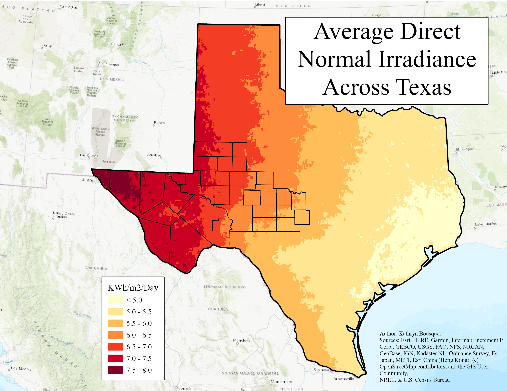
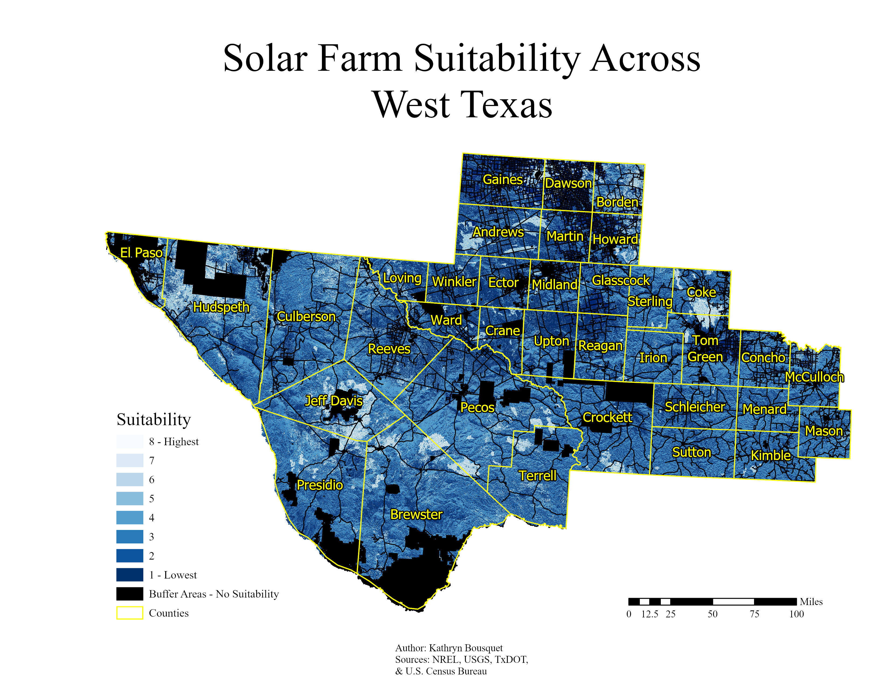
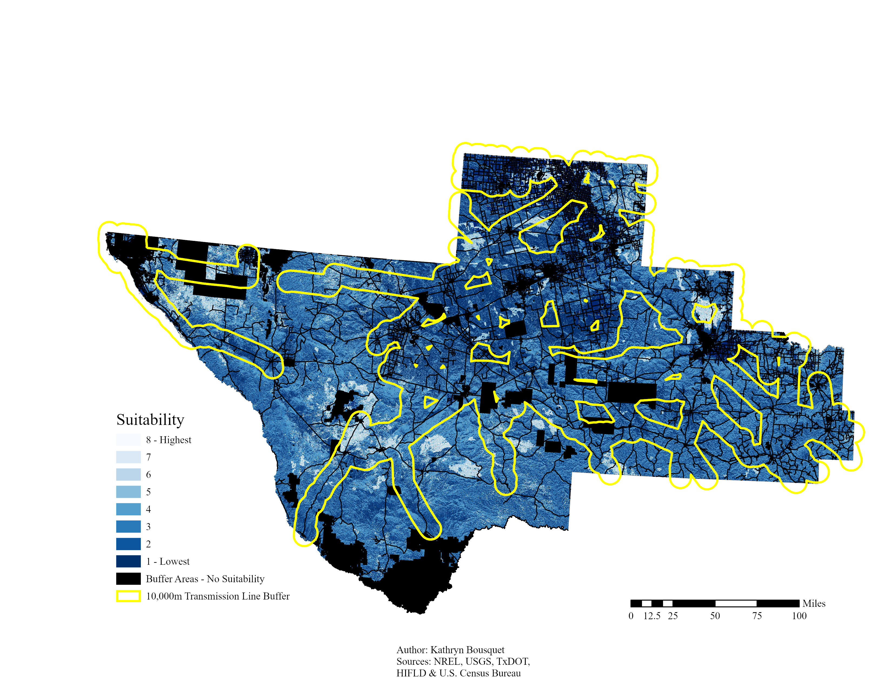

Site Suitability Analysis for New Solar Farms in West Texas
This was a semester project for my Advanced Geospatial Analytics course, where the goal was to
utilize the
advanced geospatial skills we learned throughout the semester to create a project on a topic
of our choice.
For this
project, I decided to perform a site suitability analysis for solar farms, across West Texas. Type
of land cover, proximity to protected lands, bodies of water, residential areas, and availability of
existing transmission lines all play a key role in the selection of suitable land for new solar farm
development. West Texas was chosen as a study site based on my Average Direct Normal Irradiance
Across Texas map shown below:

Suitability layers were created for Aspect (land slope) and landcover suitability using
classification.

This map shows the suitability distribution with a 500m buffer constraint from protected areas,
water bodies, and roads (unsuitable areas shown in black). The counties are overlain for reference.

This map shows the suitability distribution with a 10,000 buffer around existing transmission lines.
Actual transmission lines are not shown to prevent clutter.

Overall, the areas with the highest solar farm suitability in West Texas are sparse. Towards the
west, Hudspeth, Jeff Davis, Presidio, Brewster, Pecos, Terrell, and Culberson Counties all appear to
have highly suitable lands ripe for further site suitability analysis. There appears to be a prime
spot, located within 10,000m of a transmission line, between Jeff Davis, Brewster, and Presidio
Counties. A majority of the other highly suitable areas lie outside the range of any existing
transmission line. Towards the eastern side of West Texas, Andrews, Borden, Coke, and Tom Green
Counties also have areas of high suitability. However, there is a high density of roads, which
suggests they are more densely populated and might not be the best areas for solar farm development.